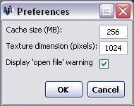

The preferences can be modified by opening preferences window. To do this, click on the "Window" menu followed by "Preference".

The preferences window will show the current preference settings and allow you to make changes.
Clicking the "OK" button will accept the modified settings, but, the new settings won't take effect until you close and re-start Parbat3D. See below for a description of the preferences found in the Preferences Window.
Parbat3D loads images in multiple different sections. Each of the sections are partially stored in memory, known as a cache, as they are loaded in order to reduce the amount of data that needs to be read from disk every time the user pans or zooms. The "Cache size" setting allows the user to specify how much memory should be used to store this cache. The larger this value is, the quicker you may be able to pan and zoom the image. However, setting this value too high could cause your system to run out of available memory. It is recommended to set this value well below the amount of RAM your system has available.
The "Texture dimension" is related to the "Cache size" setting. It allows the user to set the size of the different sections that are stored in the cache. By setting this to a larger value, the user may be able to pan futher around the image before more data is required to read from the disk. However, if this value is too high, there won't be enough room in the cache to store multiple different sections and Parbat3D will be forced to read from the disk every time you pan or zoom.
The "Display open file warning" setting allows you to turn off the warning box that is displayed when a user attempts to close the program with an image currently open. If this setting is turned on, the user is asked to confirm that they want to quit. If this setting is turned off, no warning is given to the user and the program will quit straight away.
The Parbat3D settings file is stored in the current user's Window's account. This means that multiple different users can use Parbat3D with their own preferences and window layout. If Parbat3D is run while a particular user is logged on, then closed and run again when a different user is logged in, the preferences that it uses may be different.